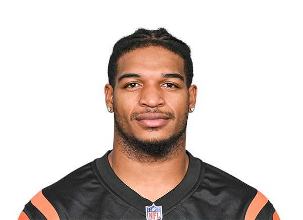
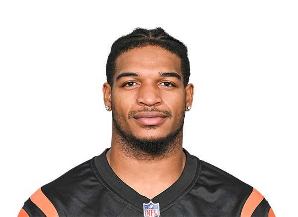

Marcelo Gaytán Cervantes
Miss Azucena Cervantes
Tema:Práctica 6
6B
 

Un receptor abierto es un jugador ofensivo en el fútbol americano cuya función principal es atrapar pases lanzados por el mariscal de campo. Se ubica en los extremos o en la ranura de la formación y utiliza su velocidad, agilidad y habilidad para correr rutas y evadir a los defensores. Su objetivo es avanzar yardas y, en ocasiones, anotar touchdowns.